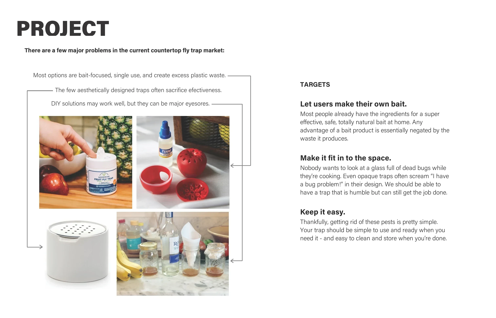

about me
Katchy Cactus
new product


![Portfolio page: a sheet of trap concept sketches with a photo of 3D-printed prototypes, under the text “Dozens of part configurations, hole designs, and shapes were tested to reach the final result.” Beside it, an exploded render of the cactus lid and pot with callouts: Interior funnel makes it easy to get in, and hard to get out. Extruded cactus tunnels also trap flies looking for an exit. The well is easy to access and fill with apple cider vinegar and a bit of dish soap – proven effective, non-toxic, and readily accessible.](../assets/img/katchy-cactus/page-8.webp)
![Process: sketches of rounded, abstract, flower and cactus trap forms and a photo of 3D-printed prototype parts, with the text: After trying a variety of formats, a small cactus was chosen. It blends in well as part of many kitchen aesthetics, and doesn’t look aggressively like an insect trap. The form changed many times as different ways of trapping the flies were tested. We found the best way was a simple funnel, with the cactus added around to provide a place for the bugs to rest and discover the bait below. The final design outperformed every other tested product and DIY alternative.](../assets/img/katchy-cactus/process.webp)